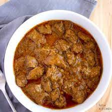

Recipe of Lamb Korma

Description
Originated in Persia, brought to India during Akbar period, and modified in Kashmir. The recipe varies from region to
region and restaurant to restaurant. North Indian Korma is pale yellow in color from saffron and cooked without any
tomatoes or turmeric. This recipe version will be the closest to the traditional Kashmiri Korma.
Kashmir Pandits substitute onion and garlic with asafoetida. Serve with jasmine rice and mango chutney
Ingredients
- 2 ¼ pounds cubed lamb meat
- 4 teaspoons olive oil, divided
- 1 brown onion, chopped
- 1 red potato, peeled and cubed
- ½ cup curry powder
- ½ cup water
- ⅓ cup coconut milk
- ⅓ cup drained canned chickpeas (garbanzo beans)
Steps
- Place lamb in a bowl and drizzle 2 teaspoons olive oil over lamb; stir until coated.
- Heat remaining 2 teaspoons olive oil in a saucepan over low heat; cook and stir onion until softened,
10 to 15 minutes. Remove saucepan from heat and add potato to onion.
- Heat a large skillet over medium heat; cook and stir lamb, working in small batches, until browned, about 5 minutes
per batch. Transfer browned lamb to onion mixture.
- Stir curry into lamb-onion mixture and cook over medium heat for 1 minute. Add water to lamb-onion mixture and
bring to a boil. Reduce heat to low, cover saucepan, and simmer until lamb is cooked through and potatoes are tender,
about 45 minutes.
- Mix coconut milk and chickpeas into lamb-onion mixture and simmer until heated through, about 5 minutes.